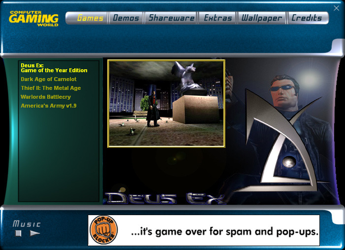
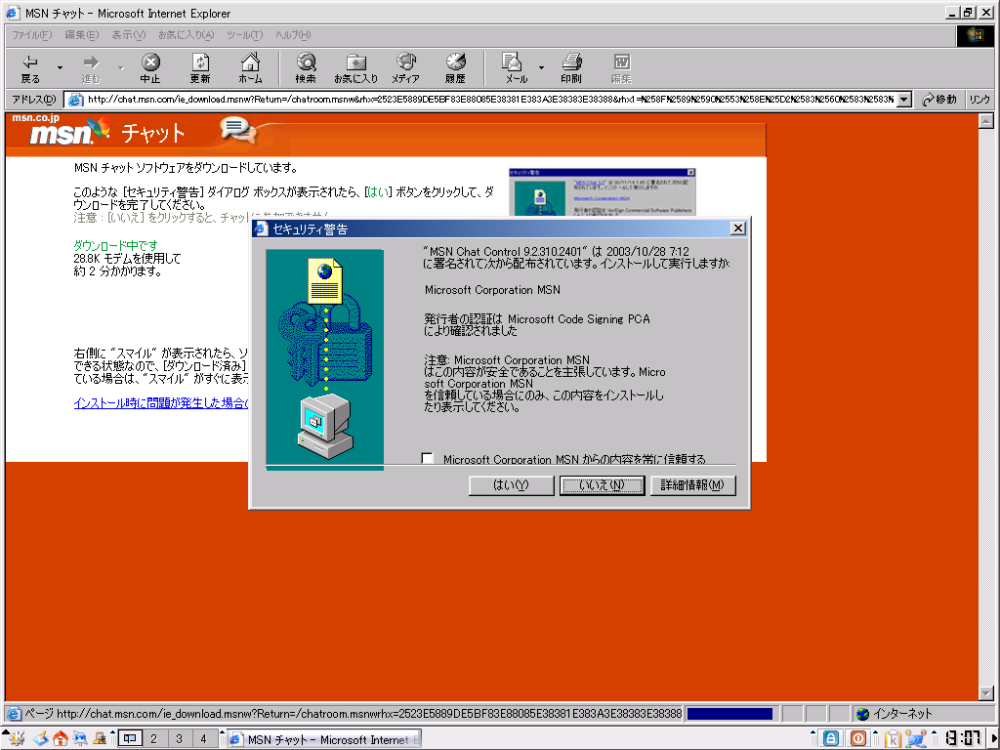

Dr. Black Jack


Compass computer for GRiD Systems. Designed by Bill Moggridge. Palo Alto, CA, 1982


AERO by ouioui land

Computer Gaming World - January 2004 DVD


MSN Messenger from 2000


Gryphon Bricks

Windows NT Setup
Source: @foone
Source: PC-98 Bot

1999


SimCity 2000 (Macintosh)


Microsoft November 1979 photos by John L Marshall
These photographs were taken at Microsoft shortly after they moved from Albuquerque, New Mexico to the 8th floor of the Old National Bank building on Northeast 8th Street in Bellevue, Washington. Bob Wallace invited me to take photographs with the agreement of Bill Gates. I was allowed free access to the entire facility. These photographs were taken in November 1979.
Microsoft did software development on a DECsystem 2020 (Digital Equipment Corporation) a 36 bit minicomputer. The hardware lab included many brands of computers where Microsoft Basic, Fortran or Cobol were ported and tested.


HL-BACK.BMP (1999)


Screenshots of WorldCraft, the level editor for Half-Life. Part of the E3 Press Kit of Valve Software in May 1998.

Official Half-Life theme for Windows 98 from 1999


Blob Factory [play on archive.org]